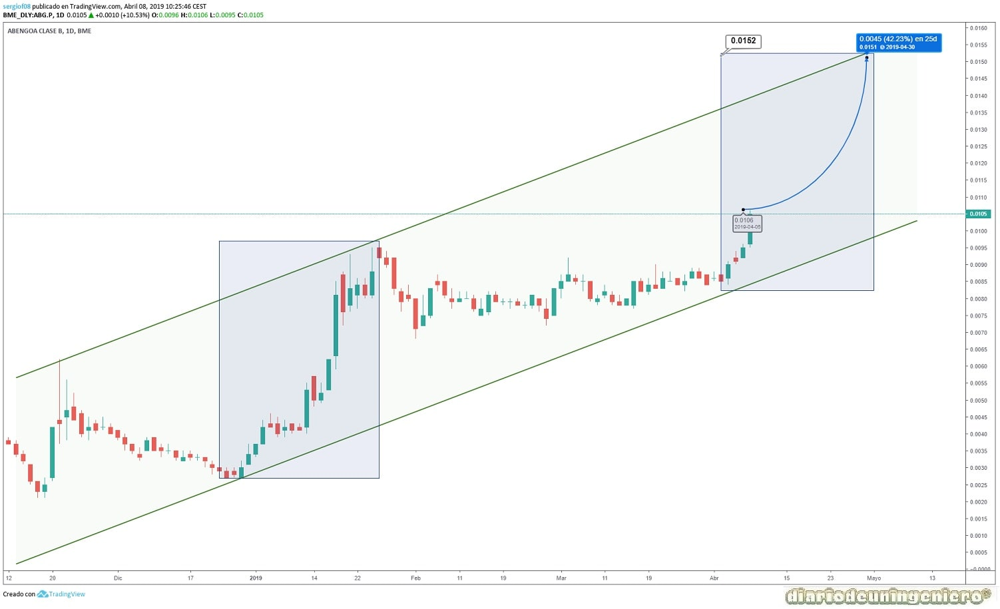

Desde entonces las negociaciones han ido a buen puerto y la restructuración de la deuda se ha llevado de manera exitosa. A 2018 la deuda estaba estructurada:
| ### | 2019 | 2018 | Obervaciones | |
|---|---|---|---|---|
| Deuda corporativa Financiera | New Money 1 | 368 | 668 | Parte de los 1266 M de Feb 2017 (5% 2 años) | New Money 2 | 262 | 267 | Parte de los 1266 M de Feb 2017 (5% 2 años) | Old Money | 2714 | 1556 | Dinero anterior al acuerdo de 2017, con plazo 2022-2023 y intereses bajos |
| Prestamo | 77 | 77 | Corto plazo, reservada | |
| Deuda Mexico | 217 | 213 | Corto plazo | |
| Sobredeuda | 15 | 16 | Deuda generada hace poco y a pagar prontamente | |
| Garantía | 85 | 78 | Corto plazo | |
| Derivados | 21 | 22 | Corto plazo | |
| Otra deuda corporativa | 649 | 569 | 75% corto plazo - 25% largo plazo | |
| Total deuda financiera | 4407 | 3558 | ||
| Proyecto Financiero | 320 | 111 | Largo plazo | |
| Deuda de compañías para la venta | 929 | 1129 | Corto plazo | |
| Total deuda financiera | 5656 | 4698 | ||
Como vemos esta es la nueva deuda financiera, siendo bruta 4407 millones. La cual se va reducir próximamente en 200 millones tras la venta de A3T que ahora mismo esta avalada por el banco Santander tras una inyección de 143 millones hace menos de 6 meses.
Lo nuevo es que se aumentan los plazos y se baja los intereses exigidos anteriormente que debieran empezar ya a tener unos intereses muy elevados del 10%. Si esto se hubiera llevado a cabo la viabilidad de la empresa no hubiera sido posible. Para ello se ha dividido la estructura de la empresa pasando el 73% a una segunda empresa llamada AbNewCo 1. El Banco Santander ahora mismo posee un 8% de la empresa y el resto es parte de los acreedores virtualmente. Si la empresa cumple los objetivos marcados la empresa no pasaría a formar parte de los acreedores y bonistas. Estos 143 millones pues serán devueltos pronto tras la venta de A3T.
El EBDITA esperado es del 6,5% 7% anual para los próximos años. Los resultados de este primer cuatrimestre han sido en línea de lo esperado. Con unas perdidas de 150 millones debido a todo este tiempo perdido con la restructuración y con la búsqueda de financiación de proyectos. Tras la culminación de estos hitos se han conseguido tres grandes contratos que más tarde se detallará cuando se muestre la cartera de proyectos. Para hacer frente a esta deuda se ha fijado la siguiente ruta:

Si nos fijamos podemos apreciar que el EBDITA esperado para este año es de 164 millones de euros para cumplir el plan. Este resultado es bastante pesimista ya que según mis cuentas estará cerca de los 200 millones de este año. De hecho ya se ha alcanzado hasta Abril un EBDITA de 47 millones. Comparando los resultados con los mismos períodos del año anterior se puede apreciar una leve mejoría contabilizando un aumento de efectivo y un cambio de tendencia en el que el número de personas contratadas que va en aumento y que esta muy cerca de las 12.000 personas. Hay que recordar que llevamos dos años seguidos de alzas en el EBDITA pasando de 127 millones en 2017 a 188 en 2018. Por cálculos en 2020 se debería generar un EBDITA cercano a 300 millones si bien el plan a 10 años es muy conservador para evitar posibles riesgos. Lo situá en 194 millones por lo que si se alcanzasen los 300 millones que cálculo yo el precio de la acción debería subir vertiginosamente y alcanzar para 2020 un valor cercano a los 1.000 millones. Actualmente el precio de Abengoa esta en 300 millones con lo que sería una revalorización cercana a al 400%.
Normalmente el precio de una acción se calcula en relación al EBDITA siendo multiplicado el valor de la empresa por 10. Sin embargo en nuestro caso debido a la gran deuda de la empresa habría que tener en cuenta el indicador deuda /EBDITA, que es bastante negativo pero que a ido mejorando levemente estos años.
El ‘EBITDA’ es la mejor aproximación a la caja que genera un negocio, y la caja es un concepto que todo el mundo entiende bien. Se calcula en una Cuenta de Resultados restando a los ingresos todos los gastos que exigen desembolso, y no por lo tanto las amortizaciones, pues no implican salida de caja, y sin tener en cuenta a la deuda financiera, es decir, sin restar los gastos financieros.
Si tenemos en cuenta este indicador y el año que viene supera los 300 millones y se repaga deuda en las desinversiones restantes estaríamos hablando de tener una empresa con una deuda a corto plazo inferior a 1.000 millones. Actualmente esta deuda ronda los 1.500 millones de euros. Esa reducción de deuda tendría una repercusión en el valor de la empresa y antes incluso de que esto ocurra ya se estará descontando este hecho.
Para calcular este dato habría que observar la cartera de negocios y hacer un rango de beneficios para saber hacia donde puede caminar próximamente Abengoa. Por si fuera poco tras la restructuración el banco Santander estaría dispuesto a contribuir puntualmente en la financiación de nuevos proyectos que puedan surgir. Esto podría traer para este año todavía algún gran contrato más que marque la diferencia respecto al futuro cercano que es bastante bueno a otro en el que la deuda pase a formar historia.
Además estarían ahora mismo en el barco nuevas entidades bancarias como BBVA y Bankinter habiendo participado en el aval de 140 millones. Si los bancos deciden apoyar Abengoa con unas cuentas bastante negativas imaginemos cuando comiencen a subir tipos del BCE y los beneficios de los mismos empiecen a subir considerablemente. Entonces será mucho más fácil el apoyo para nuevos proyectos aunque el coste seguramente aumente.
Otro punto importante es la entrada en este apoyo de Carlos Slim, dueño de la empresa FCC y mayor fortuna de Mejico. Habría comenzado a prestar apoyo financiero pero no se descartaría la entrada en el accionariado. Esto podría traer peleas internas por el control de Abengoa y quizás en un futuro traer una posible OPA previa a un aumento de capital de la empresa.
Abengoa tiene presencia en todo el mundo habiendo pasado de una cartera de negocios basado en las energías renovables y en la instalación de plantas de energía a una basada en el tratamiento de aguas, en la desalinización y en las líneas de transmisión eléctrica. La actual cartera se encuentra diversificada en países de la siguiente manera:

Siendo Sudamérica y Oriente Próximo el principal foco de proyectos de la nueva Abengoa en la que prácticamente el 50% de la plantilla trabaja actualmente. A continuación muestro la cartera de proyectos actual de Abengoa con varios proyectos que superan la capitalización de la misma. El importe actual esta cercano a los 2.000 millones de euros en grandes proyectos a los que habría que sumar aquellos de menor tamaño que lleva las contratas de Abengoa como Abeinsa por ejemplo.
Como proyectos relevantes se encontraría el firmado para tratamiento de aguas de India que es el primer pie en un país con mucha necesidades de proyectos y con el mayor crecimiento de PIB anual del mundo. Se ha llevado a cabo gracias en parte al viaje que realizo el ministro de exteriores, Javier Borrell el año pasado. Esta sería plantar la pica en uno de los campos más interesantes y de futuro, el agua pero en uno de los países con más necesidades. es que el mismísimo Michael Burry que se adelanto a la gran crisis financiera de 2008 debida en gran parte a las hipotecas subprime esta invertido desde entonces e investigando el sector del agua que tiene mucha más potencia que las energías renovables o el coche eléctrico.
Según Naciones Unidas, el uso de agua a crecido a un ritmo dos veces superior al crecimiento de la población mundial durante el último siglo. A día de hoy, estamos utilizando el 30% del agua potable disponible en el mundo. En menos de 10 años el uso aumentará al 70%. En el 2025, 1.800 millones de personas vivirán en áreas donde escaseará el agua potable y 2/3 de la población mundial en zonas donde tendrán estrés puntuales de falta de agua.
Otros proyectos interesantes serían el del telescopio más grande del mundo en Chile que estaría pendiente de licitar, cuando se confirme la finalización del edificio donde va a estar ubicado y un nuevo proyecto en USA en colaboración con AEGES para un gran parque eólico que podría salir en los próximos meses. A un año de elecciones en USA es previsible que en las próximas semanas se lance el gran plan de infraestructuras que se prometió en campaña electoral por importe de 1 billón de dólares. Quizás de ahí pueda sacar algo Abengoa a través de Algonquín ya que Atlantica es una empresa americana y por ello sin impedimentos para entrar en proyectos debido a las conocidas políticas proteccionistas de Trump.
Teniendo pues un gran pie ahora mismo en Oriente Próximo y Sudamérica faltaría aumentar la exposición al mercado asiático, China y India y firmar más proyectos con la recién alianza (AEGES) con la empresa canadiense que compro Atlantica Yield.
Si en estos proyectos se llevará un beneficio neto siendo optimistas del 20% nos daría un EBDITA en estos dos años de unos 400 millones a los que habría que ir sumando proyectos que se incorporen posteriormente. La cuestión es que estos dos primeros años son vitales y si se ejecutan los proyectos correctamente podría llamar a la puerta un nuevo inversor con intención de tomar un gran peso en la compañía y que estuviese dispuesto a disminuir la deuda de la misma, multiplicando el precio de la compañía si así fuese por 4. Abengoa es por fundamentales una de las empresas más atractivas del mercado español cotizando a unos precios muy por debajo del tamaño de la empresa y del volumen de negocio. La gran incógnita es la evolución de la compañía a corto plazo y de si realiza los proyectos asignados de una manera correcta y en los plazos previstos. Para ello cuenta con una dirección y consejo bastante buenos liderados por Gonzalo Urquijo, uno de los empresarios con más prestigio en España que ha reflotado varias empresas anteriormente, en especial, ArcelorMittal.
Así pues Abengoa cuenta con todo el viento a su favor. Además el BCE todavía no ha movido un dedo para la subida de tipos por lo que la deuda hasta la fecha tiene unas tasas de interés bastante bajas.

Abengoa ha pasado estos dos años desde el acuerdo de acreedores por un infierno bursátil. Acosado por los cortos y por la venta masiva de las acciones regaladas a los bancos la acción llego a valer el mínimo válido por BME, el operador privado que gestiona la bolsa española.
Oscilaría muy poco por noticias de contratos ganados que sería el escenario perfecto para la venta de los grandes a minoritarios. Tras 6 meses sin apenas movimientos en las acciones B de la empresa y habiendo Abengoa A a bajar por debajo de los 2 céntimos de referencia, se pasaría a modificar el reglamento. Reduciéndose Abengoa a la mínima expresión, 60 millones de capitalización.
Unos pocos incautos venderían tras esta medida a 0,0035€, por cuatro o cinco veces menos el valor que pagaron por ella. Sobre todo vendería gente que compro al céntimo, los últimos en entrar en Abengoa y que prefirieron perder la mitad a arriesgarse a perderlo todo. Por otra parte las agencias que llevan las operaciones en Abengoa recibirían las acciones como oro en paño y tras el nuevo año y las negociaciones con los acreedores el precio de la acción despegaría hasta retomar el valor psicológico del céntimo por acción. Muchos de los que veníamos de arriba promediamos antes del céntimo. En mi caso a 0,0068 y a 0,0081, teniendo mi primera gran compra en los 2,2 céntimos y mi segunda gran compra en 0,013 céntimos habiendo conseguido un promedio que esta cerca de los máximos recientes de 0,0147.
Si contamos el número de accionistas que estamos comprados en Abengoa la cifran no es muy elevada y es una perdida asumible por aquellos grandes que ven valor en la empresa. La estrategia ahora mismo es vigilar las medias y el indicador MACD para ir cerrando posiciones cuando sea menester y así ir reduciendo el %. Según mis cálculos este año los minoristas que hayan ejecutado bien las operaciones deberían salir en positivo.

Si observamos el gráfico de corto plazo visualizamos el comportamiento desde la medida de la BME de cambiar el mínimo. La primera gran escalada siguiendo el gráfico se ha producido desde 0,0035 a 0,0091 aproximadamente, siendo un 261% del valor inicial. Esto me habría completado el primer ciclo de Fibonnaci y después corregiría un 30% hasta los 0,0069 representando un 30% de caída aproximada. Tras la gran subida llegaría otra subida del mismo calado, pasando de los 0,007-0,008 a los 0,0146 suponiendo un porcentaje similar.
Después habría realizado la misma caída del 30% teniendo en 0,0104 un gran soporte que esta siendo respetado. Ahora mismo quedarían unos días de acumulación en la que la acción podría subir ligeramente hasta alcanzar el valor del primer rebote los 0,0119 para comenzar la gran remontada. Si atendemos a las anteriores dos subidas esta subida podría representar un 261% sobre el valor más bajo que ha tocado, es decir los 0,0097, estando muy próximos a los 0,025 € . Teniendo de valor de referencia una resistencia en los 0,024€ siendo un valor aconsejable de salida en torno a los 0,023€.
Esto nos llevaría a una capitalización de la empresa de unos 500 millones de euros. Un valor bastante modesto para el valor real de la empresa. De hecho es el valor que muchos le pusimos cuando comenzó a andar tras dos años de bloqueo(2015-2017). Ese sería el km0 de la nueva Abengoa y donde habría que empezar a analizar ya con más rigor el valor y que no creo que llegue hasta finales de año.
Ahora mismo pues, despejadas las nubes del concurso de acreedores, y de los impugnantes solo queda seguir firmando contratos, terminar las pocas desinversiones que quedan que dejarán la deuda neta de corto plazo en torno a los 1.000 millones y terminar los proyectos que hay en actualmente.


© 2016 - All Rights Reserved - Diseñada por Sergio López Martínez
El sitio se mantiene gracias a la publicidad, por favor Desactiva Adblock para seguir navegando
He desactivado Adblock![[Valid RSS]](https://www.onepointsync.com/wp-content/uploads/2016/08/valid-rss-rogers.png "Validate my RSS feed")